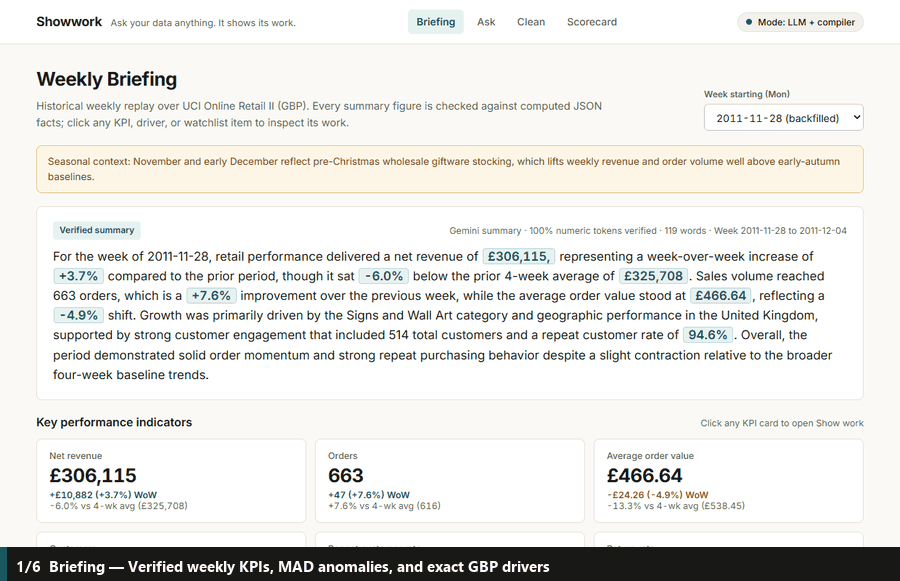

Showwork — Semantic-Layer Copilot
Always-on static snapshot of the latest verified weekly briefing, 40-question evaluation benchmark, and live walkthrough. For interactive queries and CSV cleaning, open showwork.onrender.com.

Always-on static snapshot of the latest verified weekly briefing, 40-question evaluation benchmark, and live walkthrough. For interactive queries and CSV cleaning, open showwork.onrender.com.

For the week of 2011-11-28, retail performance delivered a net revenue of £306,115, representing a week-over-week increase of +3.7% compared to the prior period, though it sat -6.0% below the prior 4-week average of £325,708. Sales volume reached 663 orders, which is a +7.6% improvement over the previous week, while the average order value stood at £466.64, reflecting a -4.9% shift. Growth was primarily driven by the Signs and Wall Art category and geographic performance in the United Kingdom, supported by strong customer engagement that included 514 total customers and a repeat customer rate of 94.6%. Overall, the period demonstrated solid order momentum and strong repeat purchasing behavior despite a slight contraction relative to the broader four-week baseline trends.
| Category | Current | WoW Change |
|---|---|---|
| Signs and Wall Art | £17,644 | +8,165 GBP |
| Textiles and Soft Furnishings | £6,857 | -4,267 GBP |
| Party | £10,115 | -3,901 GBP |
| Home Decor | £19,364 | +3,883 GBP |
| Bags | £33,424 | +3,548 GBP |
| All other (13) | £218,711 | +3,454 GBP |
| System / Mode | Split | Request-match | Answer-value | Refusal / injection |
|---|---|---|---|---|
| Showwork (LLM + compiler) | DEV | 92.9% (13/14, 95% CI 68.5-98.7%) | 100.0% (14/14, 95% CI 78.5-100.0%) | 100.0% (6/6, 95% CI 61.0-100.0%) |
| Showwork (LLM + compiler) | TEST | 92.9% (13/14, 95% CI 68.5-98.7%) | 100.0% (14/14, 95% CI 78.5-100.0%) | 100.0% (6/6, 95% CI 61.0-100.0%) |
| Showwork (No-key rule mode) | DEV | 100.0% (14/14, 95% CI 78.5-100.0%) | 100.0% (14/14, 95% CI 78.5-100.0%) | 100.0% (6/6, 95% CI 61.0-100.0%) |
| Showwork (No-key rule mode) | TEST | 92.9% (13/14, 95% CI 68.5-98.7%) | 92.9% (13/14, 95% CI 68.5-98.7%) | 100.0% (6/6, 95% CI 61.0-100.0%) |
| Plain LLM (schema + 50 rows) | DEV | n/a | 7.1% (1/14, 95% CI 1.3-31.5%) | 100.0% (6/6, 95% CI 61.0-100.0%) |
| Plain LLM (schema + 50 rows) | TEST | n/a | 0.0% (0/14, 95% CI 0.0-21.5%) | 100.0% (6/6, 95% CI 61.0-100.0%) |
| Metric | Definition | SQL | Caveats |
|---|---|---|---|
| Net revenue (v1) | Gross revenue minus the value of cancelled (returned) lines. | SUM(amount) | Returns are booked in the week of the cancellation invoice, not the week of the original sale. |
| Gross revenue (v1) | Quantity times unit price for valid product sale lines. | SUM(CASE WHEN kind = 'sale' THEN amount ELSE 0 END) | Excludes postage, fees, manual adjustments and zero-price lines, which are quarantined. |
| Returns (v1) | Value of product lines on cancellation invoices (invoice number starting with C), shown as a positive amount. | -SUM(CASE WHEN kind = 'return' THEN amount ELSE 0 END) | A cancellation can refer to a sale made before the data starts in December 2009. |
| Orders (v1) | Number of distinct sale invoices. | COUNT(DISTINCT CASE WHEN kind = 'sale' THEN invoice END) | One invoice can contain several categories, so orders by category do not add up to total orders. |
| Units sold (v1) | Sum of quantity on valid product sale lines. | SUM(CASE WHEN kind = 'sale' THEN quantity ELSE 0 END) | Many customers are wholesalers, so a few large lines can dominate a week. |
| Customers (v1) | Number of distinct identified customers with at least one sale in the period. | COUNT(DISTINCT CASE WHEN kind = 'sale' AND NOT is_guest THEN customer_id END) | Guest orders have no customer ID and are not counted. |
| Average order value (v1) | Gross revenue divided by the number of orders. | SUM(CASE WHEN kind = 'sale' THEN amount ELSE 0 END) / NULLIF(COUNT(DISTINCT CASE WHEN kind = 'sale' THEN invoice END), 0) | With a category filter this is category revenue per order that contains the category. |
| Repeat customer rate (v1) | Share of identified customers in the period whose order was not their first order in this dataset. | COUNT(DISTINCT CASE WHEN kind = 'sale' AND customer_type = 'returning' THEN customer_id END) / NULLIF(COUNT(DISTINCT CASE WHEN kind = 'sale' AND NOT is_guest THEN customer_id END), 0) | The data starts in December 2009, so customers who bought before then look new. Early months understate this rate and inflate "new" customers. |
| Return rate (v1) | Returns divided by gross revenue, by value. | -SUM(CASE WHEN kind = 'return' THEN amount ELSE 0 END) / NULLIF(SUM(CASE WHEN kind = 'sale' THEN amount ELSE 0 END), 0) | Returns and sales in the same period are not necessarily the same orders. |